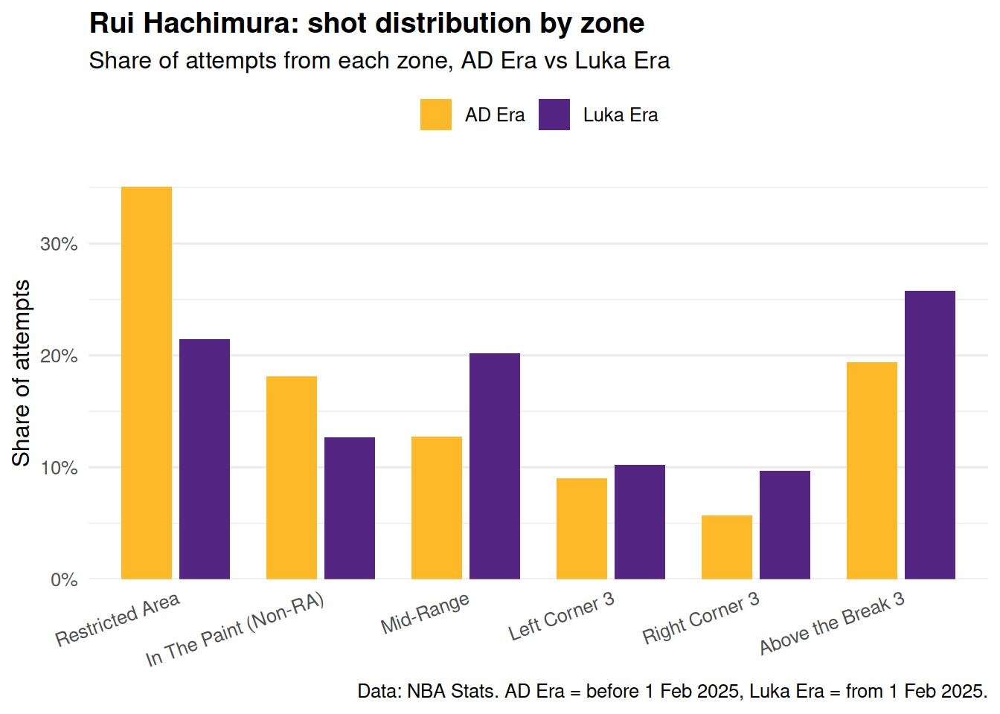

R code
dir.create("data/raw", recursive = TRUE, showWarnings = FALSE)
dir.create("data/cleaned", recursive = TRUE, showWarnings = FALSE)Last week, we used hoopR to source NBA data and save reusable files. This week we move from data sourcing into the next part of the workflow: visualisation and a first interactive dashboard.
The worked example is a Lakers Evolution Dashboard. On 1 February 2025 the Los Angeles Lakers traded for Luka Dončić. We will use that mid-season change as a natural before/after split and ask a simple, focused question: did each Lakers role player’s shot selection — the mix of zones they shoot from — change between the AD Era and the Luka Era?
We will:
Last week’s workflow was:
documentation -> pull -> inspect -> clean -> saveThis week we use the file created by that workflow. Rather than asking everyone to re-run NBA API calls in class, we will start from a prepared .rds file. That lets us spend the seminar time on charts, interactivity and app structure.
The angle for this example is:
Shot-diet lens: the Luka trade reshaped who the Lakers run their offence through. For each role player, did the mix of zones they shoot from change between the AD Era and the Luka Era?
shot_zone_basic is the right column for that question. It is a tidy NBA-Stats label that groups every shot into a familiar court area — Restricted Area, In The Paint (Non-RA), Mid-Range, Left Corner 3, Right Corner 3, Above the Break 3. If a role player’s shot diet shifts across those zones after the trade, a simple bar chart will show it.
The Lakers are a useful case study because the trade gives us a natural before/after with the same players on either side. We will look at five role players who spent meaningful time on the Lakers roster around the trade:
To get a more reliable picture of each player’s shot diet — rather than relying on a half-season on either side of the trade — the prepared file pulls four NBA regular seasons: 2022/23, 2023/24, 2024/25 and 2025/26. Each player’s AD Era window therefore includes the Lakers seasons they played before 1 February 2025, and the Luka Era includes the rest of 2024/25 plus all of 2025/26. If a player wasn’t on the Lakers for a particular season, that season is simply absent from their data.
The dashboard question is deliberately focused. We are not trying to explain the whole NBA. We are building a small interactive tool that shows how each Lakers role player’s shot selection shifted after Luka arrived.
By the end of this workbook, you will have:
.rds file with shots from five Lakers role players across four seasons;era column based on the Luka trade date;The important sequence is:
readRDS() -> derive era -> static bar plot -> Plotly bar plot -> pre-aggregate -> Shiny appEach step adds one idea. If a later step breaks, the earlier step still works — which makes debugging much easier.
Before downloading today’s cleaned Lakers file, tidy the data/ folder you created last week. Downloaded API data can become large and change when you re-run calls, so it belongs in data/raw/. Cleaned tables that you use for charts and apps belong in data/cleaned/.
Start in the Files pane in RStudio. It is usually in the bottom-right panel.
data folder to open it.New Folder.raw.OK or Create.cleaned.You should now have:
data/
raw/
cleaned/If you prefer to create the folder with code, this does the same thing:
R code
dir.create("data/raw", recursive = TRUE, showWarnings = FALSE)
dir.create("data/cleaned", recursive = TRUE, showWarnings = FALSE)Next, move any existing files from the top level of data/ into the right subfolder.
In the Files pane:
data folder.nba_2024_team_box.rds, and move them into data/raw/.More.Move.Move.Cleaned summary files, such as nba_2024_team_stats.rds, should move into data/cleaned/.
You can also move the existing files with code:
R code
items_to_move <- list.files("data", full.names = TRUE, recursive = FALSE)
items_to_move <- items_to_move[file.info(items_to_move)$isdir == FALSE]
raw_files <- items_to_move[grepl("_box\\.(rds|csv)$", basename(items_to_move))]
cleaned_files <- items_to_move[grepl("_stats\\.(rds|csv)$", basename(items_to_move))]
if (length(raw_files) > 0) {
file.rename(raw_files, file.path("data/raw", basename(raw_files)))
}
if (length(cleaned_files) > 0) {
file.rename(cleaned_files, file.path("data/cleaned", basename(cleaned_files)))
}Now open .gitignore and add this line:
data/raw/This means Git will ignore the raw downloaded files. That is good practice because raw sports data can be large, slow to regenerate and unnecessary to store in every commit. We will work from a cleaned .rds file instead.
Download the cleaned Lakers shot file from Canvas and place it in your project folder like this:
data/
cleaned/
lakers_shots.rdsThe file was created using the same technique we covered in Workbook 2: read the documentation, choose the right parameters, pull the data, inspect the returned columns, clean the table, and save the result. Each row is one field-goal attempt by one of the five Lakers role players during the selected regular seasons.
If you are interested, open the optional section below in your own time. You do not need to run those API calls during the seminar. For today, the practical task starts from the prepared .rds file.
The code below shows the data-cleaning route used to create the Canvas file. This is here for transparency, not because you need to repeat it in class.
Packages and constants
R code
library(hoopR)
library(dplyr)
library(purrr)
library(tidyr)
lakers_players <- tibble::tribble(
~player_id, ~player_name,
1629060, "Rui Hachimura",
1630559, "Austin Reaves",
2544, "LeBron James",
1629637, "Jaxson Hayes",
1627827, "Dorian Finney-Smith"
)
nba_stats_seasons <- c("2022-23", "2023-24", "2024-25", "2025-26")
lakers_team_id <- 1610612747Four seasons gives us a more reliable sample on either side of the trade. The lakers_team_id filter (NBA-Stats’ team ID for the Lakers) is passed through to the API call so that, for a player who was traded in and out of Los Angeles, we only keep the shots they took in a Lakers jersey.
Small helper functions
R code
parse_nba_date <- function(x) {
x_chr <- as.character(x)
parsed <- rep(as.Date(NA), length(x_chr))
nba_date <- grepl("^\\d{8}$", x_chr)
parsed[nba_date] <- as.Date(x_chr[nba_date], format = "%Y%m%d")
parsed[!nba_date] <- suppressWarnings(as.Date(x_chr[!nba_date]))
parsed
}
get_player_shots <- function(player_id, player_name, season_label) {
res <- tryCatch(
hoopR::nba_shotchartdetail(
player_id = player_id,
season = season_label,
season_type = "Regular Season",
team_id = lakers_team_id,
context_measure = "FGA"
),
error = function(e) NULL
)
if (is.null(res) || is.null(res$Shot_Chart_Detail) ||
nrow(res$Shot_Chart_Detail) == 0) {
return(NULL)
}
res$Shot_Chart_Detail |>
dplyr::mutate(season_label = season_label)
}nba_shotchartdetail() returns one player’s shot chart at a time, so we wrap it in a small helper and call it once per player-season combination. The tryCatch(...) plus the NULL return handles the player-seasons where a player wasn’t on the Lakers — the API just gives us back an empty table and we skip it.
Loop over players and bind
R code
shot_grid <- tidyr::expand_grid(
lakers_players,
season_label = nba_stats_seasons
)
lakers_shots_raw <- purrr::pmap(shot_grid, get_player_shots) |>
purrr::compact() |>
dplyr::bind_rows()
dir.create("data/raw", recursive = TRUE, showWarnings = FALSE)
saveRDS(lakers_shots_raw, "data/raw/lakers_shots_raw.rds")expand_grid() produces every player × season combination. pmap() calls get_player_shots() on each row, compact() drops the empty results (for player-seasons that weren’t on the Lakers), and bind_rows() stacks what’s left.
Clean and save
R code
luka_trade_date <- as.Date("2025-02-01")
lakers_shots <- lakers_shots_raw |>
rename_with(tolower) |>
transmute(
player_id,
player_name,
game_id,
game_date = parse_nba_date(game_date),
season = as.integer(substr(season_label, 1,
4)) + 1L,
season_label,
x = as.numeric(loc_x),
y = as.numeric(loc_y),
shot_type,
action_type,
shot_zone_basic,
shot_value = if_else(shot_type == "3PT Field Goal", 3L, 2L),
shot_made_flag = as.integer(shot_made_flag),
era = if_else(game_date < luka_trade_date, "AD Era", "Luka Era")
) |>
mutate(
era = factor(era, levels = c("AD Era", "Luka Era"))
)
dir.create("data/cleaned", recursive = TRUE, showWarnings = FALSE)
saveRDS(lakers_shots, "data/cleaned/lakers_shots.rds")The cleaned table has one row per shot. The era column is the key new variable: it splits each player’s season into the AD Era (before 1 February 2025) and the Luka Era (from 1 February 2025 onwards). That single column is what makes the dashboard’s before/after comparison possible.
We only need a small set of packages for today’s chart and app.
R code
library(dplyr)
library(ggplot2)
library(plotly)
library(shiny)Read the prepared file, make sure era is in place, and put shot_zone_basic in a sensible left-to-right order (close range → long range).
R code
luka_trade_date <- as.Date("2025-02-01")
zone_order <- c(
"Restricted Area",
"In The Paint (Non-RA)",
"Mid-Range",
"Left Corner 3",
"Right Corner 3",
"Above the Break 3"
)
lakers_shots <- readRDS("data/cleaned/lakers_shots.rds") |>
mutate(
game_date = as.Date(game_date),
era = factor(
if_else(game_date < luka_trade_date, "AD Era", "Luka Era"),
levels = c("AD Era", "Luka Era")
)
) |>
filter(shot_zone_basic %in% zone_order) |>
mutate(shot_zone_basic = factor(shot_zone_basic, levels = zone_order))Two small choices are doing useful work here:
era is a factor with explicit level order so the AD Era always appears to the left of the Luka Era in every chart and legend.shot_zone_basic is also a factor with zone_order. That means bars read naturally from close-range on the left to long-range on the right, no matter which player we plot.Check the shape of the data before plotting.
R code
glimpse(lakers_shots)Rows: 10,934
Columns: 13
$ player_id <chr> "1629060", "1629060", "1629060", "1629060", "1629060",…
$ player_name <chr> "Rui Hachimura", "Rui Hachimura", "Rui Hachimura", "Ru…
$ game_id <chr> "0022200729", "0022200729", "0022200729", "0022200729"…
$ game_date <date> 2023-01-25, 2023-01-25, 2023-01-25, 2023-01-25, 2023-…
$ season_label <chr> "2022-23", "2022-23", "2022-23", "2022-23", "2022-23",…
$ x <dbl> -32, 163, 230, 116, 17, 96, -92, 39, 71, 230, 23, -92,…
$ y <dbl> 36, 258, 43, 115, 20, 233, 55, 4, 8, 34, 7, 243, 215, …
$ shot_type <chr> "2PT Field Goal", "3PT Field Goal", "3PT Field Goal", …
$ action_type <chr> "Running Layup Shot", "Jump Shot", "Jump Shot", "Pullu…
$ shot_zone_basic <fct> In The Paint (Non-RA), Above the Break 3, Right Corner…
$ shot_value <int> 2, 3, 3, 2, 2, 3, 2, 2, 2, 3, 2, 3, 3, 2, 3, 2, 2, 2, …
$ shot_made_flag <int> 0, 0, 0, 1, 1, 1, 1, 1, 0, 0, 1, 0, 0, 1, 0, 1, 0, 1, …
$ era <fct> AD Era, AD Era, AD Era, AD Era, AD Era, AD Era, AD Era…count(lakers_shots, player_name, era)# A tibble: 10 × 3
player_name era n
<chr> <fct> <int>
1 Austin Reaves AD Era 1982
2 Austin Reaves Luka Era 1235
3 Dorian Finney-Smith AD Era 58
4 Dorian Finney-Smith Luka Era 217
5 Jaxson Hayes AD Era 252
6 Jaxson Hayes Luka Era 407
7 LeBron James AD Era 3259
8 LeBron James Luka Era 1415
9 Rui Hachimura AD Era 1306
10 Rui Hachimura Luka Era 803Each row is one field-goal attempt. The second table confirms every player has shots in both eras — the condition for a meaningful before/after view.
Before making anything interactive, build the chart as a normal static figure. A static figure is easy to inspect, easy to debug and easy to share in a report.
We will start with one player — Rui Hachimura — and one question: what share of his shots came from each zone, in each era?
Step 1: compute the per-era share of shots in each zone.
R code
rui_by_zone <- lakers_shots |>
filter(player_name == "Rui Hachimura") |>
count(era, shot_zone_basic) |>
group_by(era) |>
mutate(share = n / sum(n)) |>
ungroup()
rui_by_zone# A tibble: 12 × 4
era shot_zone_basic n share
<fct> <fct> <int> <dbl>
1 AD Era Restricted Area 458 0.351
2 AD Era In The Paint (Non-RA) 237 0.181
3 AD Era Mid-Range 166 0.127
4 AD Era Left Corner 3 118 0.0904
5 AD Era Right Corner 3 74 0.0567
6 AD Era Above the Break 3 253 0.194
7 Luka Era Restricted Area 172 0.214
8 Luka Era In The Paint (Non-RA) 102 0.127
9 Luka Era Mid-Range 162 0.202
10 Luka Era Left Corner 3 82 0.102
11 Luka Era Right Corner 3 78 0.0971
12 Luka Era Above the Break 3 207 0.258 For each era we count shots per zone, then divide by the era total. The result is a tidy table with one row per (era, zone) pair and a share column ready for plotting.
Step 2: turn that table into a clean grouped bar chart.
R code
lakers_colours <- c("AD Era" = "#FDB927", "Luka Era" = "#552583")
ggplot(rui_by_zone,
aes(x = shot_zone_basic, y = share, fill = era)) +
geom_col(position = position_dodge(width = 0.8), width = 0.7) +
scale_y_continuous(labels = scales::percent_format(accuracy = 1),
expand = expansion(mult = c(0, 0.05))) +
scale_fill_manual(values = lakers_colours) +
labs(
title = "Rui Hachimura: shot distribution by zone",
subtitle = "Share of attempts from each zone, AD Era vs Luka Era",
x = NULL, y = "Share of attempts", fill = NULL,
caption = "Data: NBA Stats. AD Era = before 1 Feb 2025, Luka Era = from 1 Feb 2025."
) +
theme_minimal(base_size = 12) +
theme(
legend.position = "top",
plot.title = element_text(face = "bold"),
axis.text.x = element_text(angle = 20, hjust = 1),
panel.grid.major.x = element_blank()
)
A few small design choices make the plot read cleanly:
position_dodge() puts the two eras side by side within each zone, which is the comparison we want.scales::percent_format() prints 25% rather than 0.25.theme_minimal() plus a few tweaks (no vertical gridlines, angled zone labels) keeps the chart tidy without fighting the data.The bar chart already tells a story: any zone where the purple bar is taller than the gold one is a zone Rui leans into more after the trade, and vice versa. What we cannot yet do is switch players, or read an exact percentage off a bar. That is where Plotly and Shiny come in.
Plotly adds three things you do not get from a static chart:
plotly::ggplotly() will convert the existing ggplot object directly. We add one extra piece inside aes() — a text aesthetic that describes the tooltip — and pass tooltip = "text" to ggplotly() so Plotly uses only that field on hover.
R code
rui_plot <- ggplot(rui_by_zone,
aes(x = shot_zone_basic, y = share, fill = era,
text = paste0(
era, "<br>",
shot_zone_basic, "<br>",
"Attempts: ", n, "<br>",
"Share: ", round(share * 100, 1), "%"
))) +
geom_col(position = position_dodge(width = 0.8), width = 0.7) +
scale_y_continuous(labels = scales::percent_format(accuracy = 1)) +
scale_fill_manual(values = lakers_colours) +
labs(fill = NULL) +
theme_minimal(base_size = 12) +
theme(legend.position = "top",
axis.text.x = element_text(angle = 20, hjust = 1))
ggplotly(rui_plot, tooltip = "text")Two lines are doing most of the work:
text = paste0(...) inside aes() defines what the hover shows. ggplot itself ignores the text aesthetic, but ggplotly() picks it up.ggplotly(..., tooltip = "text") tells Plotly to use only that field for the tooltip, instead of listing every mapped aesthetic.The chart is now exploratory: a coach can hover any bar to read the exact share and number of attempts. There is still one problem — the chart only knows about Rui. To compare Austin Reaves, we would have to rerun the code by hand. That is exactly what Shiny is for.
Before we move to Shiny, a small but important step: pre-aggregate the data.
The raw lakers_shots table has one row per shot — tens of thousands of rows across four seasons. Our chart does not need any of those rows; it only needs, for each player × era × zone, the count of attempts and the share. That is 5 players × 2 eras × 6 zones = at most 60 rows of summary data.
Why does this matter for Shiny?
filter(player_name == input$player).app/ folder travel with it. Smaller files mean a smaller, faster deployment.The rule of thumb: do the heavy lifting before the app, and ship only what the chart needs.
Compute the summary and save it into app/shot_zones.rds.
R code
shot_zones <- lakers_shots |>
count(player_name, era, shot_zone_basic) |>
group_by(player_name, era) |>
mutate(share = n / sum(n)) |>
ungroup()
shot_zones# A tibble: 57 × 5
player_name era shot_zone_basic n share
<chr> <fct> <fct> <int> <dbl>
1 Austin Reaves AD Era Restricted Area 426 0.215
2 Austin Reaves AD Era In The Paint (Non-RA) 437 0.220
3 Austin Reaves AD Era Mid-Range 205 0.103
4 Austin Reaves AD Era Left Corner 3 87 0.0439
5 Austin Reaves AD Era Right Corner 3 72 0.0363
6 Austin Reaves AD Era Above the Break 3 755 0.381
7 Austin Reaves Luka Era Restricted Area 279 0.226
8 Austin Reaves Luka Era In The Paint (Non-RA) 311 0.252
9 Austin Reaves Luka Era Mid-Range 76 0.0615
10 Austin Reaves Luka Era Left Corner 3 43 0.0348
# ℹ 47 more rowsEach row is one combination of player, era and zone, with the attempt count and the share within that era. That is the exact shape the chart consumes.
Create the app/ folder if it does not already exist, then write shot_zones.rds into it.
R code
dir.create("app", showWarnings = FALSE)
saveRDS(shot_zones, "app/shot_zones.rds")The app will read this file — not the original per-shot file. From here on, we can forget about lakers_shots entirely.
Plotly makes a chart interactive. Shiny makes the whole page reactive: the user clicks something, and R recomputes the chart for them. Instead of writing one chart per player, you write one chart template and let the user choose.
We will build the app in four small versions. Each version adds one feature. You can copy each version into app/app.R, run it, then copy the next version over the top.
A Shiny app is just an app.R script with two objects:
ui), which describes the inputs and outputs — what the user sees on the page;server), which describes what R should compute whenever the inputs change.shiny::runApp("app") launches the script as a small web app in your browser.
One quick detour before writing the app. Every R session has a working directory — the folder R looks in when you write a relative path like "shot_zones.rds".
.Rproj file sets the working directory to the project root (where data/ and app/ live).shiny::runApp("app") temporarily changes the working directory into the app/ folder for the lifetime of the app.That is why the app reads "shot_zones.rds" with no folder prefix: once the app is running, app/ is the working directory. The pre-aggregation step above already wrote app/shot_zones.rds, so the app has what it needs. If you ever rebuild shot_zones, rerun the saveRDS(..., "app/shot_zones.rds") line to refresh it.
Your project should look like this:
app/
shot_zones.rds
data/
cleaned/
lakers_shots.rds
raw/
lakers_shots_raw.rdsThe raw API pull stays in data/raw/ if you generated it yourself. The cleaned per-shot file stays in data/cleaned/ as the reusable archive. Only the 60-row summary travels with the app.
Version 1 is the smallest useful Shiny app: no dropdowns, no title, no layout. Just the bar chart we already built, wrapped in the Shiny page/server machinery.
app/app.R
library(shiny)
library(dplyr)
library(ggplot2)
lakers_colours <- c("AD Era" = "#FDB927", "Luka Era" = "#552583")
shot_zones <- readRDS("shot_zones.rds")
ui <- fluidPage(
plotOutput("zone_bars")
)
server <- function(input, output, session) {
output$zone_bars <- renderPlot({
shot_zones |>
filter(player_name == "Rui Hachimura") |>
ggplot(aes(x = shot_zone_basic, y = share, fill = era)) +
geom_col(position = position_dodge(width = 0.8), width = 0.7) +
scale_y_continuous(labels = scales::percent_format(accuracy = 1)) +
scale_fill_manual(values = lakers_colours) +
labs(title = "Rui Hachimura: shot distribution by zone",
x = NULL, y = "Share of attempts", fill = NULL) +
theme_minimal(base_size = 12) +
theme(legend.position = "top",
axis.text.x = element_text(angle = 20, hjust = 1))
})
}
shinyApp(ui = ui, server = server)Run the app:
R Console
shiny::runApp("app")Three things to notice:
plotOutput("zone_bars") in the UI is a placeholder. It says, “put a plot here, and call it zone_bars”.output$zone_bars <- renderPlot({ ... }) in the server fills that placeholder with whatever the block returns.That is Shiny in its simplest form. Everything we add from here on plugs into those same two objects.
Now the interesting move: let the user choose the player. We add two things:
selectInput() in the UI, called "player";input$player in the server, where the name used to be hard-coded.Only the UI block and a couple of lines in the server change. The rest of the script is identical to Version 1.
app/app.R (changes only)
player_choices <- sort(unique(shot_zones$player_name))
ui <- fluidPage(
selectInput(
inputId = "player",
label = "Player",
choices = player_choices,
selected = "Rui Hachimura"
),
plotOutput("zone_bars")
)
server <- function(input, output, session) {
output$zone_bars <- renderPlot({
shot_zones |>
filter(player_name == input$player) |>
ggplot(aes(x = shot_zone_basic, y = share, fill = era)) +
geom_col(position = position_dodge(width = 0.8), width = 0.7) +
scale_y_continuous(labels = scales::percent_format(accuracy = 1)) +
scale_fill_manual(values = lakers_colours) +
labs(fill = NULL) +
theme_minimal(base_size = 12) +
theme(legend.position = "top",
axis.text.x = element_text(angle = 20, hjust = 1))
})
}Run the app again. Changing the dropdown now changes the chart — and the title updates to the selected player too. Two ideas underneath this:
input$player holds the current value of the dropdown. Whenever that value changes, Shiny marks any output that reads input$player as stale and re-runs it.paste0(input$player, ": ...") into the chart title is a small but important touch. A headline that changes with the selection makes the app feel responsive.That is reactivity at its simplest: an output that reads an input automatically re-runs when the input changes.
Version 2 works, but the dropdown sits awkwardly above a huge plot. A typical Shiny layout uses sidebarLayout(): inputs in a narrow sidebar on the left, outputs in the main area on the right. We also add a titlePanel() at the top and a short sentence in the sidebar to explain the chart.
app/app.R (UI only)
ui <- fluidPage(
titlePanel("Lakers Evolution Dashboard"),
sidebarLayout(
sidebarPanel(
width = 3,
selectInput(
inputId = "player",
label = "Choose a player",
choices = player_choices,
selected = "Rui Hachimura"
),
p("Each bar shows the share of that player's attempts from a given zone.
Compare the AD Era (before 1 Feb 2025) to the Luka Era (from 1 Feb 2025).")
),
mainPanel(
width = 9,
plotOutput("zone_bars", height = "500px")
)
)
)The server block is unchanged. All we did was rearrange the page.
This is an important idea. Once reactivity is wired up, layout work is separate from data work. You can spend time polishing sidebarLayout(), headings, spacing and explanatory text without touching the server — and without breaking anything.
Swapping the static plot for an interactive Plotly chart inside Shiny takes three small changes:
plotOutput("zone_bars") becomes plotlyOutput("zone_bars").renderPlot({ ... }) becomes renderPlotly({ ... }).ggplot(...) in ggplotly(..., tooltip = "text"), and add a text = ... aesthetic so the tooltip shows the share and number of attempts.Here is the full app.R for Version 4:
app/app.R
library(shiny)
library(plotly)
library(dplyr)
library(ggplot2)
lakers_colours <- c("AD Era" = "#FDB927", "Luka Era" = "#552583")
shot_zones <- readRDS("shot_zones.rds")
player_choices <- sort(unique(shot_zones$player_name))
ui <- fluidPage(
titlePanel("Lakers Evolution Dashboard"),
sidebarLayout(
sidebarPanel(
width = 3,
selectInput(
inputId = "player",
label = "Choose a player",
choices = player_choices,
selected = "Rui Hachimura"
),
p("Hover over a bar to see the exact share and number of attempts.")
),
mainPanel(
width = 9,
plotlyOutput("zone_bars", height = "500px")
)
)
)
server <- function(input, output, session) {
output$zone_bars <- renderPlotly({
plot_data <- shot_zones |>
filter(player_name == input$player)
gg <- ggplot(plot_data,
aes(x = shot_zone_basic, y = share, fill = era,
text = paste0(
era, "<br>",
shot_zone_basic, "<br>",
"Attempts: ", n, "<br>",
"Share: ", round(share * 100, 1), "%"
))) +
geom_col(position = position_dodge(width = 0.8), width = 0.7) +
scale_y_continuous(labels = scales::percent_format(accuracy = 1)) +
scale_fill_manual(values = lakers_colours) +
labs(title = paste0(input$player, ": shot distribution by zone"),
x = NULL, y = "Share of attempts", fill = NULL) +
theme_minimal(base_size = 12) +
theme(legend.position = "top",
axis.text.x = element_text(angle = 20, hjust = 1))
ggplotly(gg, tooltip = "text")
})
}
shinyApp(ui = ui, server = server)Run the app. The chart is now a Plotly chart inside a Shiny app — the dropdown still changes the player, and every bar is also hoverable.
That is the full shape of a first Shiny app:
input --> server --> ggplot (+ ggplotly) --> plotlyOutputShiny has an official “Gallery” where you can get inspirations to improve your outputs! [link]
Three ideas underneath the whole workbook are worth flagging:
era is the whole reason this is an evolution dashboard. Everything else is just bars on top of that one derived column.input$something re-runs whenever that input changes. That one sentence captures almost all of introductory Shiny.Try these small extensions:
selected player to someone else and re-run the app;share for the raw attempt count (n) on the y-axis, and compare what the two versions emphasise;lakers_shots using summarise(fg_pct = mean(shot_made_flag)), save that as a new RDS and plot it;checkboxInput in the UI called "made_only" — you will need to rebuild the pre-aggregation with a made flag so the app can switch between “all shots” and “made only”;| Problem | Solution |
|---|---|
readRDS() cannot find the file |
Check that the Canvas file is saved in data/cleaned/ and that the pre-aggregation step wrote app/shot_zones.rds |
| App launches but the chart is blank | Check the player name matches one in the data — input$player is case-sensitive |
| Bars appear in the wrong order | Re-run the pre-aggregation step — shot_zone_basic needs to be a factor with zone_order as its levels in lakers_shots before you aggregate |
Percentages print as 0.25 |
Add scale_y_continuous(labels = scales::percent_format()) |
| Colours do not match the Lakers | Check that lakers_colours is defined and passed via scale_fill_manual() |
| Plotly chart does not appear in Shiny | Confirm plotlyOutput() in the UI pairs with renderPlotly() in the server |
| The dropdown is empty | Check that player_choices is built from the data before the ui block runs |
Great work! ✨
Today you:
.rds file of Lakers shots across four regular seasons;shot_zones.rds so the Shiny app stays lightweight;Next week we will turn this app into a more polished dashboard with a richer layout, additional charts and a short automatic commentary panel.